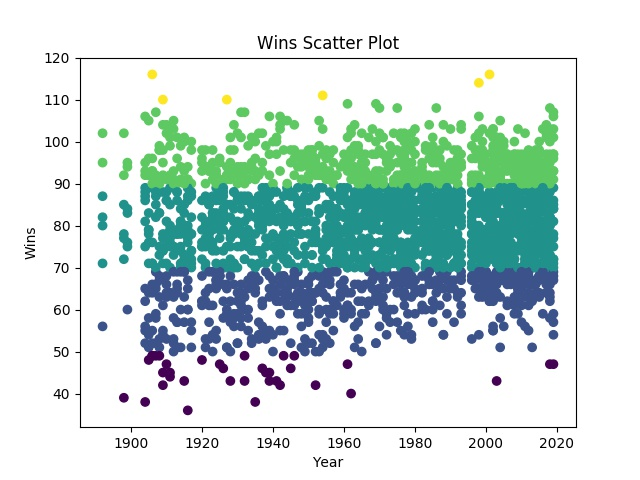

Here we see the distirbution of wins for the average MLB team over the course of MLB history. It is very interesting to see that the wins an MLB team has over the course of a season are normally distributed with an average of about 80. Thus, it shows that in the average season you can expect the distribution of how many games an MLB team wins to be about 80 games.
Here we see that distribution of games throughout MLB history broken up into buckets of less than 50, between 50 and 69, between 70 and 89, between 90 and 109, and over 110. An interesting trend to note in this picture is that as the MLB as a league matured the amount of wins as became more compacted. There are many theories as to why this could have occured. One thing to note is that as more teams were added we can expect variation of the wins to become less and closer to the true mean. This is one possible thing that caused This clustering and compactness of wins. Another point to note is that the number of wins reached their peak compactness around the late 90s and early 2000s which was when statistics began to take over the game of baseball. This rise in the use of Sabermetrics could have caused teams to game plan their offenses and defenses much better causing alot of the earlier variation in the number of wins to go away.

This graph is interesting because it shows that the number of yearly runs per game has not stayed constant throughout the history of MLB. We see that there is a huge spike around 1930 and very big dip in the late 1960s. Also we see at the height of the steroid era in the early 2000s that there is another huge spike in runs per game. Whether this spike was caused primarily by the rise of PEDs or Sabermetrics is up to debate.


From these graphs we can see that there is a positive correlation between the runs per game and wins and there is a negative correlation between the runs allowed per game and wins. This is something that seems like it would make sense but this analysis essentially proves it.

From this graph we can see the results of the K-Mean clustering algorithm. This algorithms takes all of the data points puts them into clusters based on the number of clusters you decide you want and puts them into the cluster with which they have the closest Euclidean distance to the centroid of that cluster. It is a way to show closeness between datapoints.
{% endblock %}